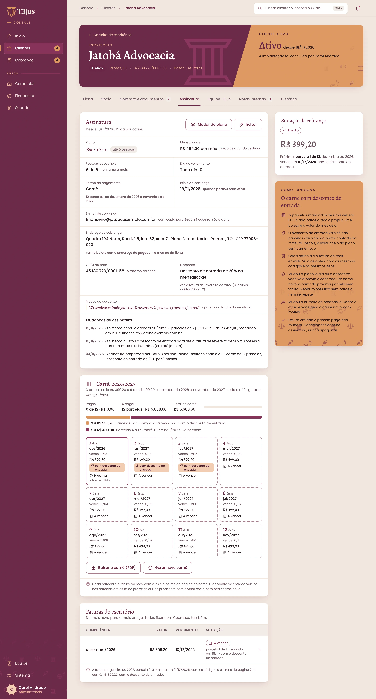

1 · Carnê novo com desconto (Jatobá)
Escritório novo, 20% até a fatura de fevereiro de 2027, 6 pessoas, dia 10. 12 parcelas de dezembro de 2026 a novembro de 2027: 3 de R$ 399,20 e 9 de R$ 499,00, total R$ 5.688,60. A faixa de valores mostra onde o desconto acaba (“Parcelas 1 a 3 · dez/2026 a fev/2027 · com o desconto de entrada” e “Parcelas 4 a 12 · valor cheio”). O histórico conta que o sistema ajustou o desconto para até fevereiro quando a 1ª fatura passou a ser dezembro.
Abrir: ficha.html?aba=assinatura&estado=cb-carne-desconto (estreite a janela para ver o celular)